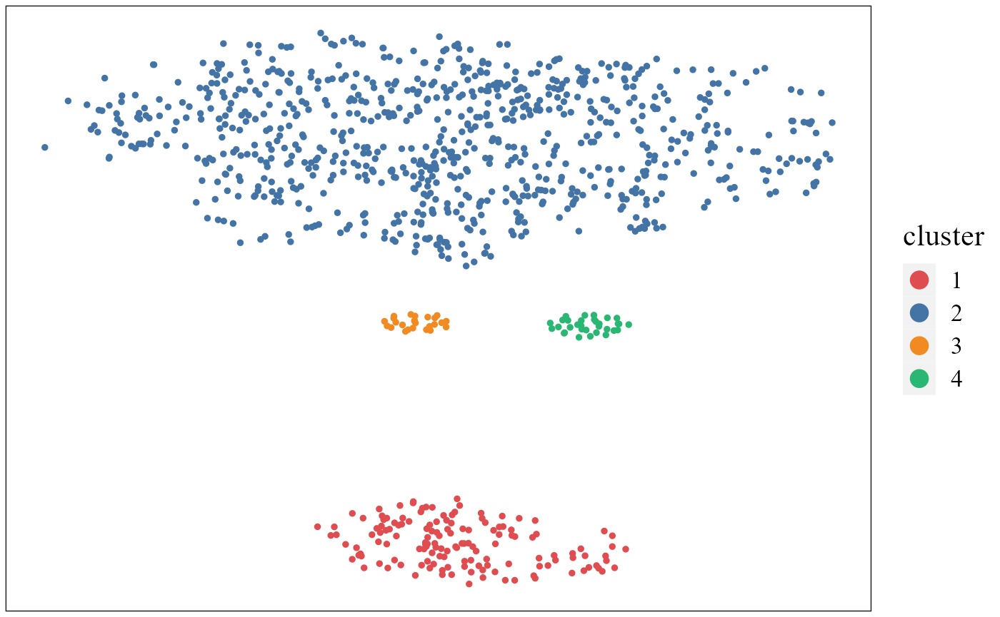
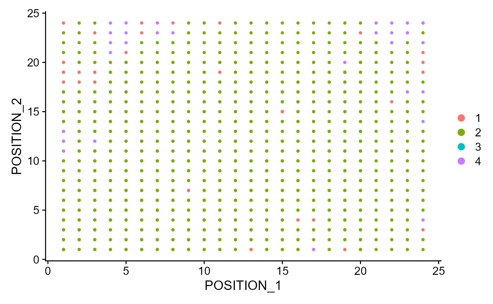
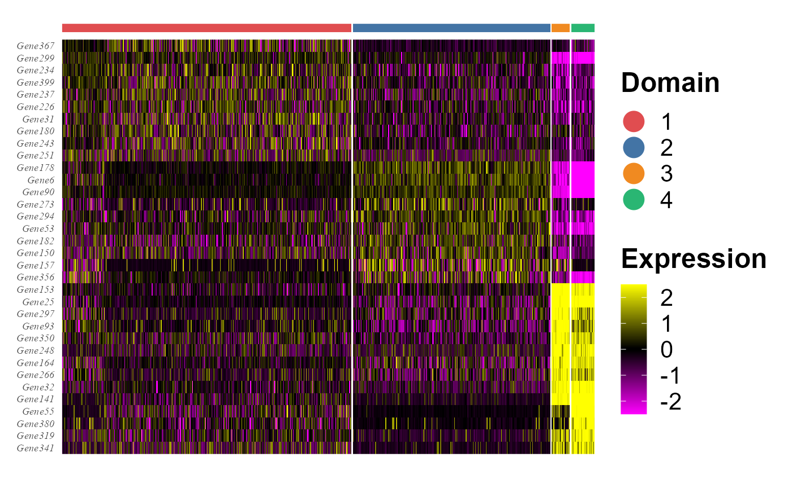
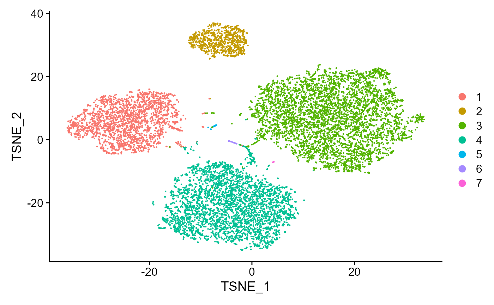

This vignette introduces the PRECAST workflow for the analysis of integrating multiple spatial transcriptomics dataset. The workflow consists of three steps
- Independent preprocessing and model setting
- Probabilistic embedding, clustering and alignment using PRECAST model
- Downstream analysis (i.e. visualization of clusters and embeddings, combined differential expression analysis)
We demonstrate the use of PRECAST to three simulated Visium data that are in the data R package DataPRECAST, which can be installed by the following command:
remotes::install_github("feiyoung/DataPRECAST")The package can be loaded with the command:
library(PRECAST)
#> Loading required package: parallel
#> Loading required package: gtools
library(DataPRECAST)
library(Seurat)
#> Warning: package 'Seurat' was built under R version 4.1.3
#> Attaching SeuratObject
#> Attaching spLoad the simulated data
First, we load the the simulate three spatial transcriptomics data with Visium platform from DataPRECAST package.
data("data_simu")
data_simu ## a list including three Seurat object
#> [[1]]
#> An object of class Seurat
#> 2000 features across 4226 samples within 1 assay
#> Active assay: RNA (2000 features, 0 variable features)
#>
#> [[2]]
#> An object of class Seurat
#> 2000 features across 3661 samples within 1 assay
#> Active assay: RNA (2000 features, 0 variable features)
#>
#> [[3]]
#> An object of class Seurat
#> 2000 features across 3639 samples within 1 assay
#> Active assay: RNA (2000 features, 0 variable features)Check the content in data_simu.
head(data_simu[[1]])Fit PRECAST using simulated data
Prepare the PRECASTObject with preprocessing step.
In this simulate dataset, we don’t require to select genes, thus, we set customGenelist=row.names(data_simu[[1]])
## Create
set.seed(2022)
PRECASTObj <- CreatePRECASTObject(data_simu, customGenelist=row.names(data_simu[[1]]))
#> Filter spots and features from Raw count data...
#>
#>
#> Filter spots and features from SVGs(HVGs) count data...Add the model setting
## check the number of genes/features after filtering step
PRECASTObj@seulist
#> [[1]]
#> An object of class Seurat
#> 2000 features across 4226 samples within 1 assay
#> Active assay: RNA (2000 features, 0 variable features)
#>
#> [[2]]
#> An object of class Seurat
#> 2000 features across 3661 samples within 1 assay
#> Active assay: RNA (2000 features, 0 variable features)
#>
#> [[3]]
#> An object of class Seurat
#> 2000 features across 3639 samples within 1 assay
#> Active assay: RNA (2000 features, 0 variable features)
## Add adjacency matrix list for a PRECASTObj object to prepare for PRECAST model fitting.
PRECASTObj <- AddAdjList(PRECASTObj, platform = "Visium")
#> Neighbors were identified for 4226 out of 4226 spots.
#> Neighbors were identified for 3658 out of 3661 spots.
#> Neighbors were identified for 3638 out of 3639 spots.
## Add a model setting in advance for a PRECASTObj object. verbose =TRUE helps outputing the information in the algorithm.
PRECASTObj <- AddParSetting(PRECASTObj, Sigma_equal=FALSE, maxIter=30, verbose=TRUE)Fit PRECAST
For function PRECAST, users can specify the number of clusters \(K\) or set K to be an integer vector by using modified BIC(MBIC) to determine \(K\). For convenience, we give a single K here.
### Given K
set.seed(2022)
PRECASTObj <- PRECAST(PRECASTObj, K=7)
#> Intergrative data info.: 3 samples, 2000 genes X 11526 spots------
#> PRECAST model setting: error_heter=TRUE, Sigma_equal=FALSE, Sigma_diag=TRUE, mix_prop_heter=TRUE
#> Start computing intial values...
#> fitting ...
#>
|
| | 0%
|
|=================================== | 50%
|
|======================================================================| 100%
#> ----Fitting PRECAST model----------------
#> variable initialize finish!
#> predict Y and V!
#> Finish ICM step!
#> iter = 2, loglik= 9805208.000000, dloglik=1.004566
#> predict Y and V!
#> diff Energy = 2.390760
#> Finish ICM step!
#> iter = 3, loglik= 10273323.000000, dloglik=0.047741
#> predict Y and V!
#> diff Energy = 1.029719
#> diff Energy = 31.428540
#> Finish ICM step!
#> iter = 4, loglik= 10319466.000000, dloglik=0.004492
#> predict Y and V!
#> diff Energy = 6.566663
#> diff Energy = 28.895589
#> Finish ICM step!
#> iter = 5, loglik= 10340035.000000, dloglik=0.001993
#> predict Y and V!
#> diff Energy = 3.391790
#> diff Energy = 18.147621
#> diff Energy = 29.404689
#> Finish ICM step!
#> iter = 6, loglik= 10351715.000000, dloglik=0.001130
#> predict Y and V!
#> diff Energy = 1.134165
#> diff Energy = 23.909978
#> Finish ICM step!
#> iter = 7, loglik= 10358928.000000, dloglik=0.000697
#> predict Y and V!
#> diff Energy = 8.758301
#> diff Energy = 25.439173
#> Finish ICM step!
#> iter = 8, loglik= 10363896.000000, dloglik=0.000480
#> predict Y and V!
#> diff Energy = 0.287529
#> diff Energy = 7.890778
#> diff Energy = 22.823961
#> Finish ICM step!
#> iter = 9, loglik= 10367537.000000, dloglik=0.000351
#> predict Y and V!
#> diff Energy = 6.623711
#> diff Energy = 24.631577
#> Finish ICM step!
#> iter = 10, loglik= 10370411.000000, dloglik=0.000277
#> predict Y and V!
#> diff Energy = 3.546291
#> diff Energy = 7.743051
#> diff Energy = 21.521472
#> Finish ICM step!
#> iter = 11, loglik= 10372792.000000, dloglik=0.000230
#> predict Y and V!
#> diff Energy = 11.423422
#> diff Energy = 12.692962
#> Finish ICM step!
#> iter = 12, loglik= 10374860.000000, dloglik=0.000199
#> predict Y and V!
#> diff Energy = 4.679947
#> diff Energy = 6.527124
#> diff Energy = 8.818867
#> Finish ICM step!
#> iter = 13, loglik= 10376760.000000, dloglik=0.000183
#> predict Y and V!
#> diff Energy = 9.276712
#> diff Energy = 10.159702
#> Finish ICM step!
#> iter = 14, loglik= 10378637.000000, dloglik=0.000181
#> predict Y and V!
#> diff Energy = 0.048153
#> diff Energy = 4.097419
#> diff Energy = 0.255860
#> Finish ICM step!
#> iter = 15, loglik= 10380592.000000, dloglik=0.000188
#> predict Y and V!
#> diff Energy = 1.245978
#> diff Energy = 9.019440
#> diff Energy = 0.537759
#> Finish ICM step!
#> iter = 16, loglik= 10382676.000000, dloglik=0.000201
#> predict Y and V!
#> diff Energy = 3.015670
#> diff Energy = 4.027684
#> diff Energy = 0.978522
#> Finish ICM step!
#> iter = 17, loglik= 10384512.000000, dloglik=0.000177
#> predict Y and V!
#> diff Energy = 5.527720
#> diff Energy = 4.320971
#> diff Energy = 2.449087
#> Finish ICM step!
#> iter = 18, loglik= 10386076.000000, dloglik=0.000151
#> predict Y and V!
#> diff Energy = 3.550321
#> diff Energy = 2.141480
#> Finish ICM step!
#> iter = 19, loglik= 10387362.000000, dloglik=0.000124
#> predict Y and V!
#> diff Energy = 1.257031
#> diff Energy = 11.139806
#> diff Energy = 3.786619
#> Finish ICM step!
#> iter = 20, loglik= 10388497.000000, dloglik=0.000109
#> predict Y and V!
#> diff Energy = 5.958328
#> diff Energy = 3.797948
#> Finish ICM step!
#> iter = 21, loglik= 10389500.000000, dloglik=0.000097
#> predict Y and V!
#> diff Energy = 1.363787
#> diff Energy = 7.860454
#> diff Energy = 3.715027
#> Finish ICM step!
#> iter = 22, loglik= 10390444.000000, dloglik=0.000091
#> predict Y and V!
#> diff Energy = 5.374734
#> diff Energy = 3.561620
#> Finish ICM step!
#> iter = 23, loglik= 10391327.000000, dloglik=0.000085
#> predict Y and V!
#> diff Energy = 2.659518
#> diff Energy = 4.196477
#> diff Energy = 3.854789
#> Finish ICM step!
#> iter = 24, loglik= 10392216.000000, dloglik=0.000086
#> predict Y and V!
#> diff Energy = 3.146170
#> diff Energy = 4.469484
#> Finish ICM step!
#> iter = 25, loglik= 10393081.000000, dloglik=0.000083
#> predict Y and V!
#> diff Energy = 3.237239
#> diff Energy = 6.490544
#> Finish ICM step!
#> iter = 26, loglik= 10393984.000000, dloglik=0.000087
#> predict Y and V!
#> diff Energy = 3.531536
#> diff Energy = 2.327812
#> Finish ICM step!
#> iter = 27, loglik= 10394888.000000, dloglik=0.000087
#> predict Y and V!
#> diff Energy = 2.235750
#> diff Energy = 3.924678
#> Finish ICM step!
#> iter = 28, loglik= 10395869.000000, dloglik=0.000094
#> predict Y and V!
#> diff Energy = 2.196432
#> diff Energy = 5.785649
#> Finish ICM step!
#> iter = 29, loglik= 10396856.000000, dloglik=0.000095
#> predict Y and V!
#> diff Energy = 1.787209
#> diff Energy = 1.662138
#> diff Energy = 9.574203
#> Finish ICM step!
#> iter = 30, loglik= 10397940.000000, dloglik=0.000104Select a best model and use ARI to check the performance of clustering
## backup the fitting results in resList
resList <- PRECASTObj@resList
# PRECASTObj@resList <- resList
PRECASTObj <- selectModel(PRECASTObj)
true_cluster <- lapply(data_simu, function(x) x$true_cluster)
str(true_cluster)
#> List of 3
#> $ : Named num [1:4226] 1 3 1 7 6 6 7 5 3 3 ...
#> ..- attr(*, "names")= chr [1:4226] "S1_spot1" "S1_spot2" "S1_spot3" "S1_spot4" ...
#> $ : Named num [1:3661] 4 6 3 4 6 3 3 4 6 7 ...
#> ..- attr(*, "names")= chr [1:3661] "S1_spot1" "S1_spot2" "S1_spot3" "S1_spot4" ...
#> $ : Named num [1:3639] 3 1 7 3 5 6 7 3 2 6 ...
#> ..- attr(*, "names")= chr [1:3639] "S1_spot1" "S1_spot2" "S1_spot3" "S1_spot4" ...
mclust::adjustedRandIndex(unlist(PRECASTObj@resList$cluster), unlist(true_cluster))
#> [1] 0.6617659Integrate the two samples by the function IntegrateSpaData.
seuInt <- IntegrateSpaData(PRECASTObj, species='unknown')
#> Using only PRECAST results to obtain the batch corrected gene expressions since species is unknown or the genelist in PRECASTObj has less than 5 overlapp with the housekeeping genes of given species.
#> Users can specify the custom_housekeep by themselves to use the housekeeping genes based methods.
seuInt
#> An object of class Seurat
#> 2000 features across 11526 samples within 1 assay
#> Active assay: PRE_CAST (2000 features, 0 variable features)
#> 2 dimensional reductions calculated: PRECAST, position
## The low-dimensional embeddings obtained by PRECAST are saved in PRECAST reduction slot.Visualization
Show the spatial scatter plot for clusters
p12 <- SpaPlot(seuInt, batch=NULL,point_size=2, combine=TRUE)
p12
# users can plot each sample by setting combine=FALSEShow the spatial UMAP/tNSE RGB plot
seuInt <- AddUMAP(seuInt)
SpaPlot(seuInt, batch=NULL,item='RGB_UMAP',point_size=2, combine=TRUE, text_size=15)
#seuInt <- AddTSNE(seuInt)
#SpaPlot(seuInt, batch=NULL,item='RGB_TSNE',point_size=2, combine=T, text_size=15)Show the tSNE plot based on the extracted features from PRECAST to check the performance of integration.
seuInt <- AddTSNE(seuInt, n_comp = 2)
library(patchwork)
cols_cluster <- c("#E04D50", "#4374A5", "#F08A21","#2AB673", "#FCDDDE", "#70B5B0", "#DFE0EE" ,"#D0B14C")
p1 <- dimPlot(seuInt, font_family='serif', cols=cols_cluster) # Times New Roman
p2 <- dimPlot(seuInt, item='batch', point_size = 1, font_family='serif')
p1 + p2 
# It is noted that only sample batch 1 has cluster 4, and only sample batch 2 has cluster 7. Show the UMAP plot based on the extracted features from PRECAST.
dimPlot(seuInt, reduction = 'UMAP3', item='cluster', cols=cols_cluster, font_family='serif')
Users can also use the visualization functions in Seurat package:
DimPlot(seuInt, reduction = 'position')
DimPlot(seuInt, reduction = 'tSNE')
Combined differential expression analysis
dat_deg <- FindAllMarkers(seuInt)
#> Calculating cluster 1
#> Calculating cluster 2
#> Calculating cluster 3
#> Calculating cluster 4
#> Calculating cluster 5
#> Calculating cluster 6
#> Calculating cluster 7
library(dplyr)
#> Warning: package 'dplyr' was built under R version 4.1.3
#>
#> Attaching package: 'dplyr'
#> The following objects are masked from 'package:stats':
#>
#> filter, lag
#> The following objects are masked from 'package:base':
#>
#> intersect, setdiff, setequal, union
n <- 2
dat_deg %>%
group_by(cluster) %>%
top_n(n = n, wt = avg_log2FC) -> top10
head(top10)
#> # A tibble: 6 x 7
#> # Groups: cluster [3]
#> p_val avg_log2FC pct.1 pct.2 p_val_adj cluster gene
#> <dbl> <dbl> <dbl> <dbl> <dbl> <fct> <chr>
#> 1 4.66e- 8 1.12 0.397 0.313 9.33e- 5 1 Gene142
#> 2 1.09e- 4 0.832 0.279 0.272 2.19e- 1 1 Gene70
#> 3 5.99e-37 2.09 0.186 0.193 1.20e-33 2 Gene1938
#> 4 4.73e-16 1.70 0.528 0.293 9.46e-13 2 Gene211
#> 5 2.90e-28 1.07 0.158 0.209 5.80e-25 3 Gene670
#> 6 4.22e- 7 0.591 0.384 0.306 8.44e- 4 3 Gene1994Session information
sessionInfo()
#> R version 4.1.2 (2021-11-01)
#> Platform: x86_64-w64-mingw32/x64 (64-bit)
#> Running under: Windows 10 x64 (build 22000)
#>
#> Matrix products: default
#>
#> locale:
#> [1] LC_COLLATE=English_Singapore.1252 LC_CTYPE=English_Singapore.1252
#> [3] LC_MONETARY=English_Singapore.1252 LC_NUMERIC=C
#> [5] LC_TIME=English_Singapore.1252
#> system code page: 936
#>
#> attached base packages:
#> [1] parallel stats graphics grDevices utils datasets methods
#> [8] base
#>
#> other attached packages:
#> [1] dplyr_1.0.9 patchwork_1.1.1 sp_1.5-0 SeuratObject_4.1.0
#> [5] Seurat_4.1.1 DataPRECAST_0.1.0 PRECAST_1.2 gtools_3.9.2.2
#>
#> loaded via a namespace (and not attached):
#> [1] utf8_1.2.2 reticulate_1.25
#> [3] tidyselect_1.1.2 htmlwidgets_1.5.4
#> [5] grid_4.1.2 BiocParallel_1.28.3
#> [7] Rtsne_0.16 munsell_0.5.0
#> [9] ScaledMatrix_1.2.0 codetools_0.2-18
#> [11] ragg_1.2.2 ica_1.0-2
#> [13] future_1.26.1 miniUI_0.1.1.1
#> [15] spatstat.random_2.2-0 colorspace_2.0-3
#> [17] progressr_0.10.1 Biobase_2.54.0
#> [19] highr_0.9 knitr_1.37
#> [21] rstudioapi_0.13 stats4_4.1.2
#> [23] SingleCellExperiment_1.16.0 ROCR_1.0-11
#> [25] tensor_1.5 listenv_0.8.0
#> [27] labeling_0.4.2 MatrixGenerics_1.6.0
#> [29] GenomeInfoDbData_1.2.7 polyclip_1.10-0
#> [31] farver_2.1.0 rprojroot_2.0.3
#> [33] parallelly_1.32.0 vctrs_0.4.1
#> [35] generics_0.1.2 xfun_0.29
#> [37] ggthemes_4.2.4 R6_2.5.1
#> [39] GenomeInfoDb_1.30.1 ggbeeswarm_0.6.0
#> [41] rsvd_1.0.5 bitops_1.0-7
#> [43] spatstat.utils_2.3-1 cachem_1.0.6
#> [45] DelayedArray_0.20.0 assertthat_0.2.1
#> [47] promises_1.2.0.1 scales_1.2.0
#> [49] rgeos_0.5-9 beeswarm_0.4.0
#> [51] gtable_0.3.0 beachmat_2.10.0
#> [53] globals_0.15.0 goftest_1.2-3
#> [55] rlang_1.0.2 systemfonts_1.0.4
#> [57] splines_4.1.2 lazyeval_0.2.2
#> [59] spatstat.geom_2.4-0 yaml_2.3.5
#> [61] reshape2_1.4.4 abind_1.4-5
#> [63] httpuv_1.6.5 tools_4.1.2
#> [65] ggplot2_3.3.6 ellipsis_0.3.2
#> [67] spatstat.core_2.4-4 jquerylib_0.1.4
#> [69] RColorBrewer_1.1-3 BiocGenerics_0.40.0
#> [71] ggridges_0.5.3 Rcpp_1.0.8.3
#> [73] plyr_1.8.7 sparseMatrixStats_1.6.0
#> [75] zlibbioc_1.40.0 purrr_0.3.4
#> [77] RCurl_1.98-1.6 rpart_4.1.16
#> [79] deldir_1.0-6 pbapply_1.5-0
#> [81] viridis_0.6.2 cowplot_1.1.1
#> [83] S4Vectors_0.32.3 zoo_1.8-10
#> [85] SummarizedExperiment_1.24.0 ggrepel_0.9.1
#> [87] cluster_2.1.2 fs_1.5.2
#> [89] magrittr_2.0.3 GiRaF_1.0.1
#> [91] data.table_1.14.2 scattermore_0.8
#> [93] lmtest_0.9-40 RANN_2.6.1
#> [95] fitdistrplus_1.1-8 matrixStats_0.62.0
#> [97] mime_0.12 evaluate_0.15
#> [99] xtable_1.8-4 mclust_5.4.10
#> [101] IRanges_2.28.0 gridExtra_2.3
#> [103] compiler_4.1.2 scater_1.25.1
#> [105] tibble_3.1.7 KernSmooth_2.23-20
#> [107] crayon_1.5.1 htmltools_0.5.2
#> [109] mgcv_1.8-39 later_1.3.0
#> [111] tidyr_1.2.0 DBI_1.1.2
#> [113] MASS_7.3-55 Matrix_1.4-0
#> [115] cli_3.2.0 igraph_1.3.2
#> [117] DR.SC_3.0 GenomicRanges_1.46.1
#> [119] pkgconfig_2.0.3 pkgdown_2.0.2
#> [121] plotly_4.10.0 scuttle_1.4.0
#> [123] spatstat.sparse_2.1-1 vipor_0.4.5
#> [125] bslib_0.3.1 XVector_0.34.0
#> [127] CompQuadForm_1.4.3 stringr_1.4.0
#> [129] digest_0.6.29 sctransform_0.3.3
#> [131] RcppAnnoy_0.0.19 spatstat.data_2.2-0
#> [133] rmarkdown_2.11 leiden_0.4.2
#> [135] uwot_0.1.11 DelayedMatrixStats_1.16.0
#> [137] shiny_1.7.1 lifecycle_1.0.1
#> [139] nlme_3.1-155 jsonlite_1.8.0
#> [141] BiocNeighbors_1.12.0 limma_3.50.1
#> [143] desc_1.4.0 viridisLite_0.4.0
#> [145] fansi_1.0.3 pillar_1.7.0
#> [147] lattice_0.20-45 fastmap_1.1.0
#> [149] httr_1.4.3 survival_3.2-13
#> [151] glue_1.6.2 png_0.1-7
#> [153] stringi_1.7.6 sass_0.4.1
#> [155] textshaping_0.3.6 BiocSingular_1.10.0
#> [157] memoise_2.0.1 irlba_2.3.5
#> [159] future.apply_1.9.0